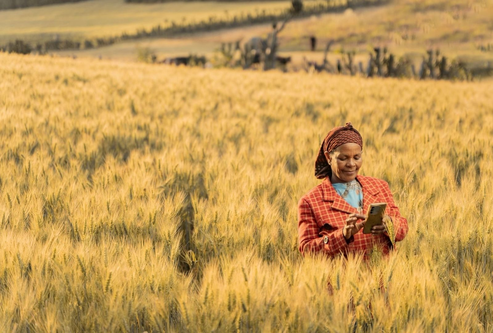
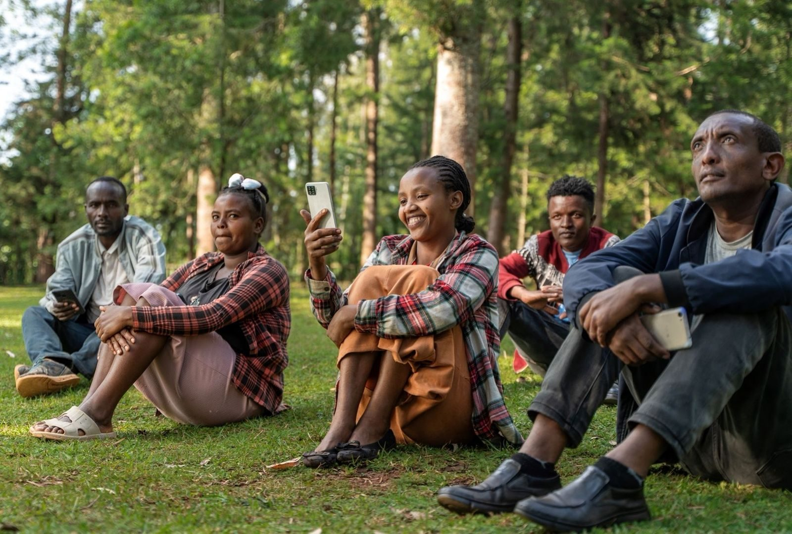
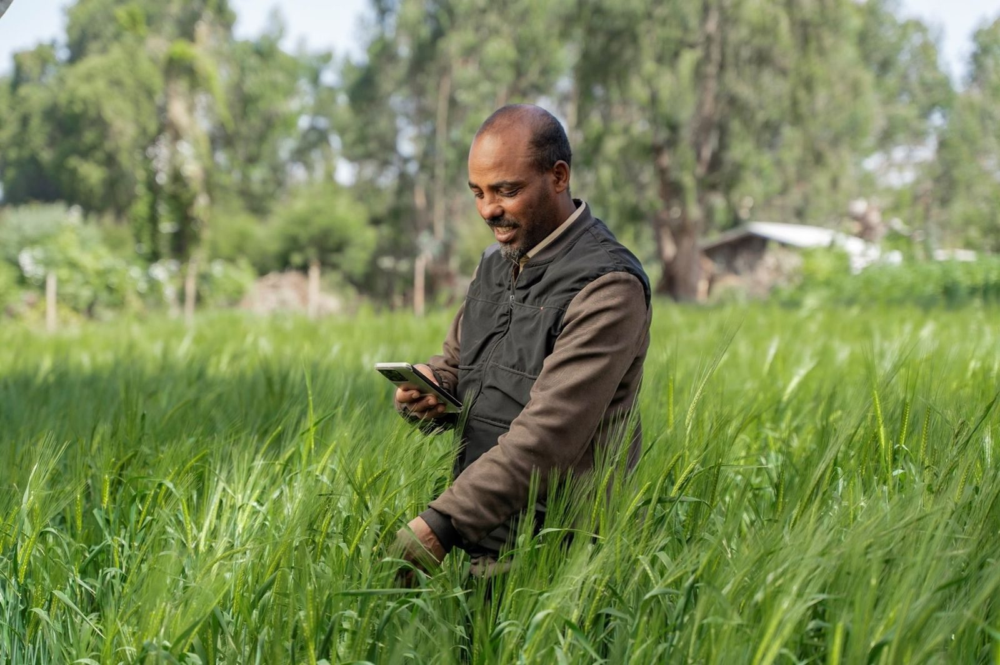

Work · Case note
Making AI make sense to a farmer.
Digital Green built FarmerChat, an AI assistant that gives farmers and extension workers agricultural advice through image, voice and text. My job, with the team at Youthopians, was to make people see why it matters to them.
- Client
- Digital Green Foundation, Ethiopia
- Work
- Strategy, campaign, field production, photography, video, audio
- Where
- Jimma, Arsi and Dilla, Sidama
- When
- 2024 to 2026

The problem
Farmers don’t need to understand AI.
FarmerChat solves a real problem with fairly complex technology. Digital Green also had several donors to satisfy at once, and needed proof of real use among low-literacy, multilingual farmers in places with weak connectivity.
So the question was not how to explain a technology. It was how to move the message from “here is an AI tool” to “here is something that can help you”, across different audiences, languages and farming regions.
The idea
A farmer has a question. FarmerChat has an answer.
- ProblemA farmer runs into a pest, a crop issue or a farming decision.
- AskThey ask FarmerChat, by photo, voice or text.
- AnswerFarmerChat gives relevant guidance in their language.
- ActionThey act on it in the field.
Every piece of content followed this shape. The campaign went out in Amharic as ግብርናዎን ያዘምኑ, “Modernise your farming”.
In the field
Real farmers, real fields.
We didn’t build this from a desk. The team filmed and photographed in Jimma, Arsi and Dilla, and Sidama, with farmers, extension workers and their communities at the centre.
Women extension agents came up in the research as important FarmerChat users, so they are part of the visual story, not an afterthought.


Language
One product, many local realities.
Ethiopia is not one audience. Campaign content was made with Amharic, Afaan Oromo, Sidamgna and English in mind, with native speakers on voice, subtitles and calls to action, not just translation.
For the farmers who read least, we made audio content and voice notes in Afaan Oromo, Amharic and Somali.
What we made
One story, many outputs.
Facebook and TikTok carried the farmer-facing stories. LinkedIn carried impact and partnership.

What the client said
“They were organized, patient, and genuinely fun to work with. The team understood the brief quickly and captured exactly the energy we needed for FarmerChat.”
The takeaway
Show the person, not the product.
The work was not a pile of photos and videos. It was one system: a hero documentary, short campaign stories, an evergreen photo library, product explainers and local-language versions, each with a job, all saying the same thing.
If you have a product or programme that’s hard to explain, that’s the conversation I’d start with.